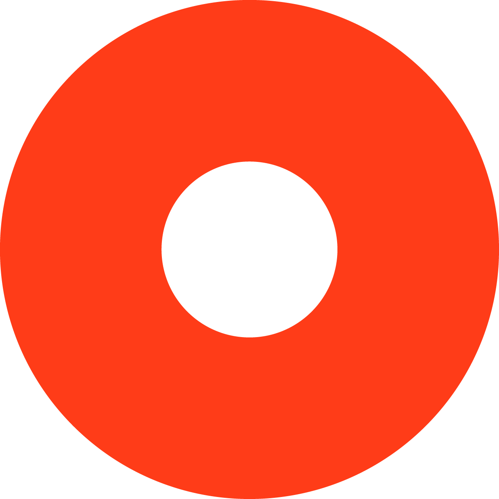

Desplegar navegación
inicio
universidades
mundo laboral
reconocimiento
asociaciones
caso ESD
La otra mitad
alumnos
profesores
guías docentes
ESD.｜.Escuela Superior de Diseño ｜ Profesores
Profesores en distintos puestos de la ESD ｜ pincha en el gráfico para conocer los datos
Total
Mujeres
Hombres
% Mujeres
Profesores de grado
74
39
35
53%
Responsables asignatura
69
37
32
54%
Profesores de Master
20
5
15
25%
Equipo directivo
6
2
4
33%